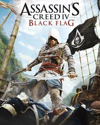
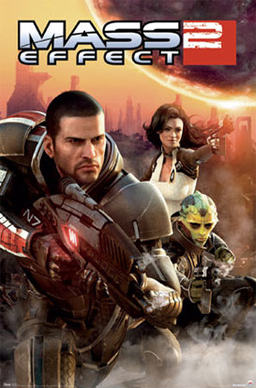
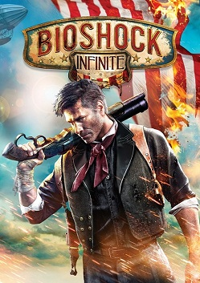
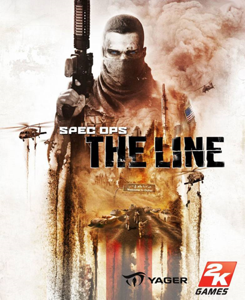

.png)
Uma jornada épica através dos meus mundos virtuais preferidos, com reviews e avaliações.
🎮 Gênero: Ação-Aventura · Mundo Aberto
Uma das melhores entradas da franquia, com Edward Kenway, um pirata carismático envolvido com os Assassinos no Caribe do século XVIII. Batalhas navais intensas, ilhas repletas de segredos para explorar e uma trilha sonora marcante tornam essa experiência única dentro da série.

🎮 Gênero: Terror · Horror Psicológico
Clássico do terror psicológico onde James Sunderland vai à sombria Silent Hill após receber uma carta de sua esposa falecida. O jogo aborda culpa e trauma de forma profunda, com criaturas simbólicas que representam os conflitos internos do protagonista.

🎮 Gênero: Ação-Aventura · Puzzle
Obra de arte da Team Ico onde Wander percorre um mundo vasto com um único objetivo: derrotar 16 colossos gigantes para ressuscitar uma garota. Sem inimigos comuns — apenas você, seu cavalo Agro e confrontos épicos carregados de emoção.

🎮 Gênero: RPG · Ficção Científica
Considerado um dos melhores RPGs de ficção científica, onde o Comandante Shepard reúne uma equipe para uma missão suicida contra uma ameaça alienígena. Cada personagem tem grande profundidade, e suas escolhas determinam diretamente quem sobreviverá.

🎮 Gênero: FPS · Ação
Ambientado em Columbia, uma cidade flutuante em 1912, onde Booker DeWitt precisa resgatar Elizabeth, que possui o poder de abrir fendas na realidade. A narrativa complexa, com universos paralelos, leva a um dos finais mais impactantes dos games.

🎮 Gênero: TPS · Ação
Começa como um shooter militar comum, mas evolui para uma crítica perturbadora ao gênero de guerra, inspirada em Heart of Darkness. O Capitão Walker enfrenta uma Dubai devastada, onde a linha entre herói e vilão se torna cada vez mais distorcida.

🎮 Gênero: Ação-Aventura · Hack and Slash
Reinvenção da franquia onde Kratos tenta controlar sua fúria enquanto cria seu filho Atreus no universo da mitologia nórdica. Com câmera em plano contínuo, combate intenso e uma narrativa emocional, entrega uma relação de pai e filho marcante.

← Página Anterior Página 2 de 2